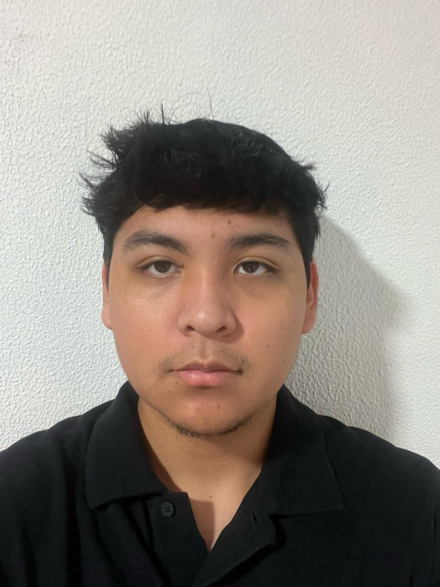

Frontend Developer
Junior Programmer _
Estudiante de Sistemas Microinformáticos y Redes en Bemen-3. Apasionado por la informática, organizado y con facilidad para tratar con la gente.
> Available for internships
> Based in Barcelona & learning Cybersecurity

About Me
A short technical biography
Hello! My name is Gabriel Daniel Vasquez Hinojosa. Born in Barcelona on 09/09/2004, with Spanish and Bolivian nationality.
Student of Microcomputer Systems and Networks (SMIX) at Bemen-3. Responsible, punctual and organized, with attention to detail.
I work well with others, stay calm under pressure, and learn new tools quickly. My goal is to study Cybersecurity in the future.
Currículum Vitae
Formación, experiencia y habilidades
Formación
Grado Medio SMIX
Bemen-3, Barcelona · 2025 – ActualidadHardware, redes, sistemas operativos y desarrollo web.
ESO
Institut Caterina Albert · 2018 – 2022Experiencia
Informador — Gala dels Goya 2026
Academia de Cinematografía · Feb – Mar 2026Atención a invitados, gestión de traslados y acreditaciones.
Vigilante de parking
SISVI · Agosto 2025Control de accesos y vigilancia general.
Operario de reformas
Todo Reformas · Veranos 2023 – 2025Demolición, fontanería, electricidad y pintura.
Camarero
Las Palmeras · Junio 2024Portfolio Showcase
Proyectos
Projects


Sistemas Operativos
Instalación y particionado.

Edición multimedia
Captura y edición de vídeo.

CV y habilidades
Currículum y presentación personal.

Video del Portal
Pitch profesional sobre el portfolio
Contact Me
¿Una idea, prácticas o colaborar? Escríbeme.
Hubungi Saya
Barcelona, España.